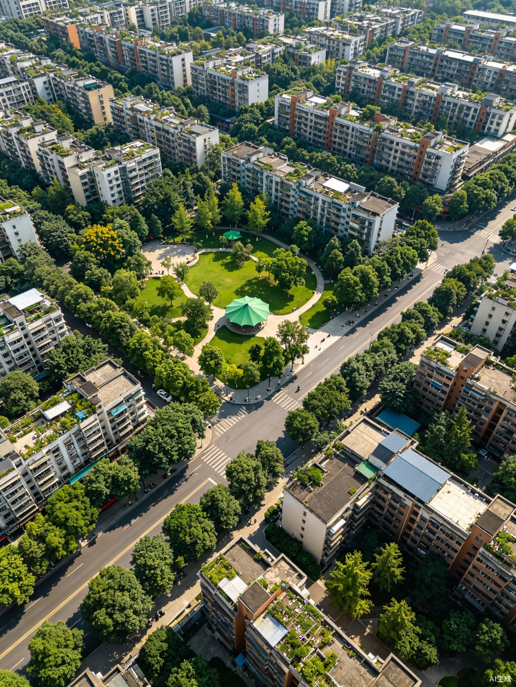
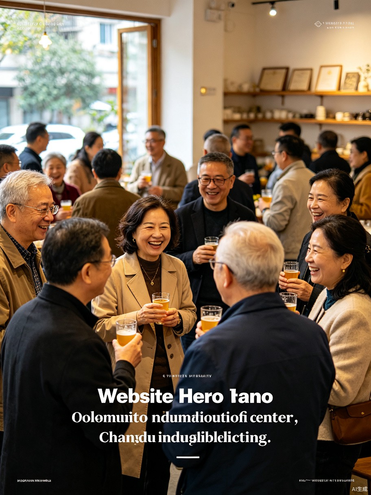

导航中
/ Navigating
10:00 → 12:00
·
2.0 km
·
120 min
当前: 社区公园
/ Current: Community Park
路线站点
/ Route Stops
社区中心
/ Community Center
文化 / Culture

邻里咖啡馆
/ Neighborhood Cafe
美食 / Food

社区公园
/ Community Park
户外 / Outdoor
进行中 / In Progress
东侧健身器材区最热闹 / East fitness area is busiest

农贸市场
/ Fresh Market
生活 / Life
路线完成
/ Route Complete